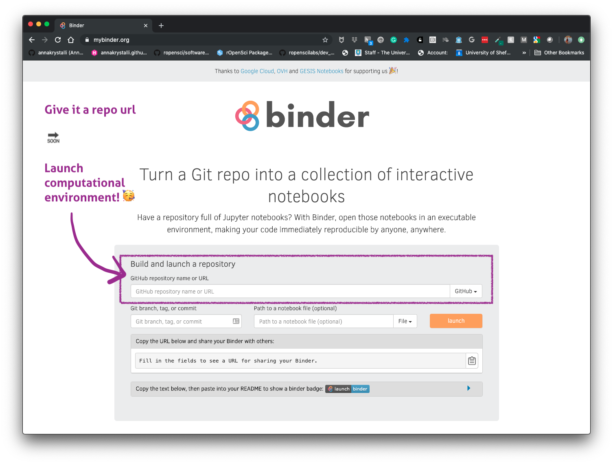

[1] "/Users/Anna/Documents/workflows/talks"Putting the  into Reproducible (Marine) Research
into Reproducible (Marine) Research
Marine Biology Live - 12th Dec 2023
Calls for reproducibility
Reproducibility has the potential to serve as a minimum standard for judging scientific claims when full independent replication of a study is not possible.

Reproducible Research in Computational Science ROGER D. PENG, SCIENCE 02 DEC 2011 : 1226-1227
Is code and data enough?

Karthik Ram: rstudio::conf 2019 talk
Project management

Rstudio Projects
Use Rstudio projects to keep materials associated with a particular analysis together
- Self contained and portable
- Working directory set to root of project on launch
- Fresh session everytime the project is launched
File > New Project > New Directory

Version Control
What is it? 🤔
The management of changes to documents, computer programs, large web sites, and other collections of information.
Git 
Open source (free to use) Version control software.
GitHub 
A website (https://github.com/) that allows you to store your Git repositories online and makes it easy to collaborate with others.
Why use them in research?
Exhibit A

Exhibit B

Git, Github & Rstudio
Before: git only through the terminal 😢
. . .
Now: Rstudio + usethis 📦 == ❤️ Git & GitHub 🤩

Initialise git
Initialise Rstudio project with Git by just checking a box!

It’s now a repository
Forgot to check git box? use usethis::use_git()
Git panel
Integrated graphical user interface

Git Rstudio workflow
view file status

stage files

commit changes

Share on GitHub


GitHub issues
use GitHub issues to plan, record and discuss tasks.
issues

projects

Applications in research
Quarto documents can be useful for a number of research related long form documentation materials:
- Documentation of code & data
- Electronic Notebooks
- Supplementary materials
- Reports
- Papers
- Theses, Slides, websites, ebooks and more!

Managing analysis code
Separate function definition and application
In the beginning: many lines of directly executed code in a single analysis script.
As it matures: reusable chunks ➡️ functions.

R Package Structure
Used to share functionality with the R community
Useful conventions
Useful software development tools
Easy publishing through GitHub

tests
Tests provide confidence in what the code is doing.
Research compendia in R

Ben Marwick, Carl Boettiger & Lincoln Mullen (2018) Packaging Data Analytical Work Reproducibly Using R (and Friends)

Example compendium
Paper:

Compendium

paper.qmd to paper.pdf
Rmd


On a computer without System Library GDAL ❌
What are Docker containers?

Dockerfile: Text file containing recipe for setting up computation environment.
Docker Image: Executable built from the Dockerfile with all required dependencies installed. Can have many images from the same
Dockerfile.Docker Container: Docker Images become containers at runtime
Rocker on DockerHub
using the rocker/geospatial Docker Image ✅


Karthik Ram: rstudio::conf 2019
Binder
https://mybinder.org/
Bring your code repositories to life!
